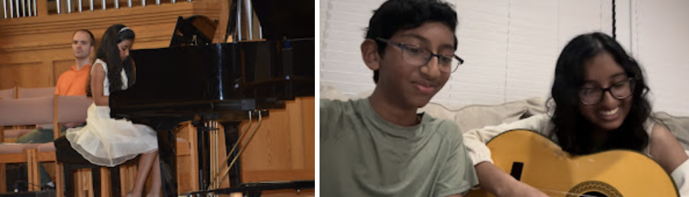
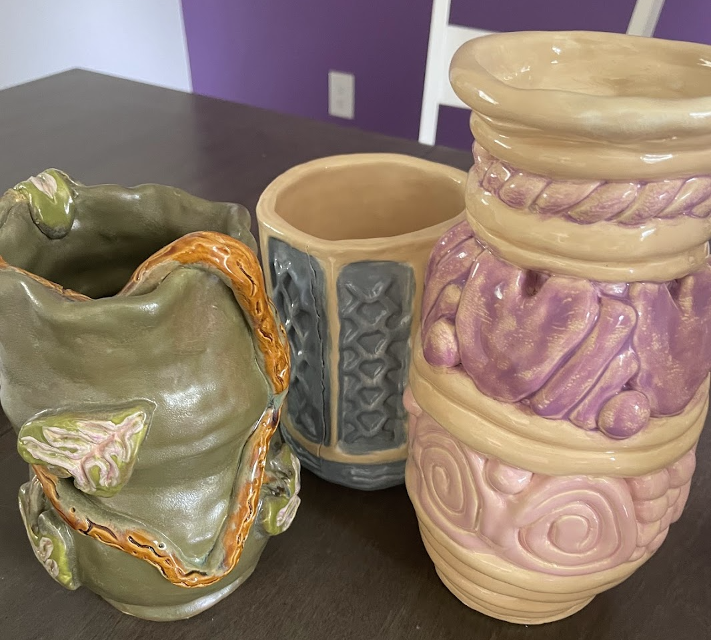

NEHA VEMULAPALLI
Welcome to my personal portfolio website!
Welcome to my personal portfolio website!
| My name is Neha Vemulapalli and I am currently going to start first year of undergrad at Rutgers University-New Brunswick where I plan on majoring in Computer Science. I had recently graduated from John P. Stevens High School in June 2024. |
A big part of my life since I was little has been music. I have played piano from when I was around 7 all the up to 15 years old. I also recently learned how to play the guitar during my senior year of highschool. I listen to music every day and it ranges from current pop music to r&b or 80s/90s music.

Another activity that I have grown to love is dance. I have danced competitevly from the age of 5 up to 13. Afterwards, I just danced for fun with family and friends during special events..
Another hobby that I recently gotten into with a class in my last year of high school is pottery. I made functional dishes such as vases, a mug, a bowl, and a box.

This is my dad, Naren Vemulapalli. He is almost 50 years old and is currentßly working as a software developer. He is originally from India and moved after I was born. During his free time he likes to watch TV and has a big interest in golf.
This is my mom, Chaitanya Vemulapalli. She is 41 years old and currently works part-time at a pharmacy. During her free time she likes to relax and watch TV. She has also has spent time trying new recipes when cooking.
This is my brother, Pranav Vemulapalli. He is 16 years old and is going to be a junior in highschool. Some of his favorite things to do in his free time is play the trombone, play basketball, and play video games with his friends.
|
This is my dog, Rowdy! He is a golden doodle and is 5 years old (35
in dog years). Rowdy is a big fan of car rides, walks, and rope
toys. He is also very friendly with people and loves to seek any
chance he gets to be petted. Some of his favorite foods are
idli/dosa, blueberries, apples, and his own dog treats.
|